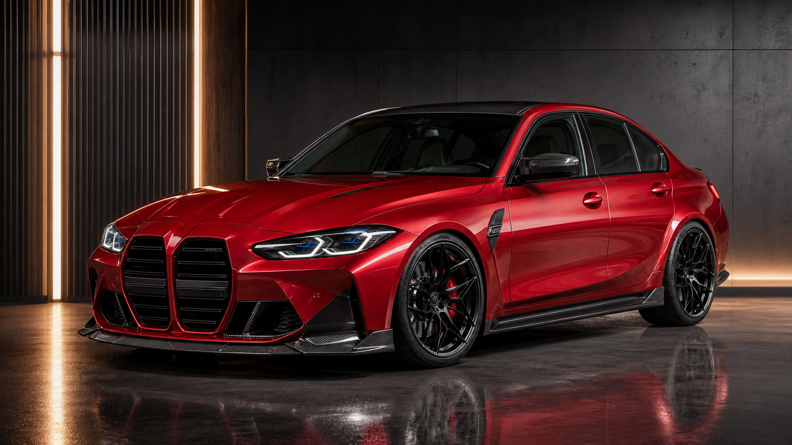
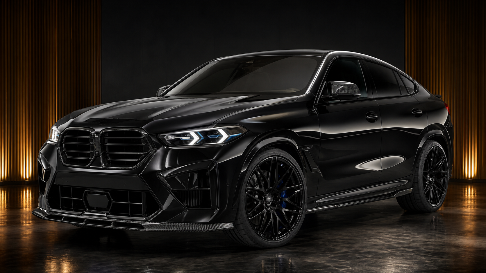
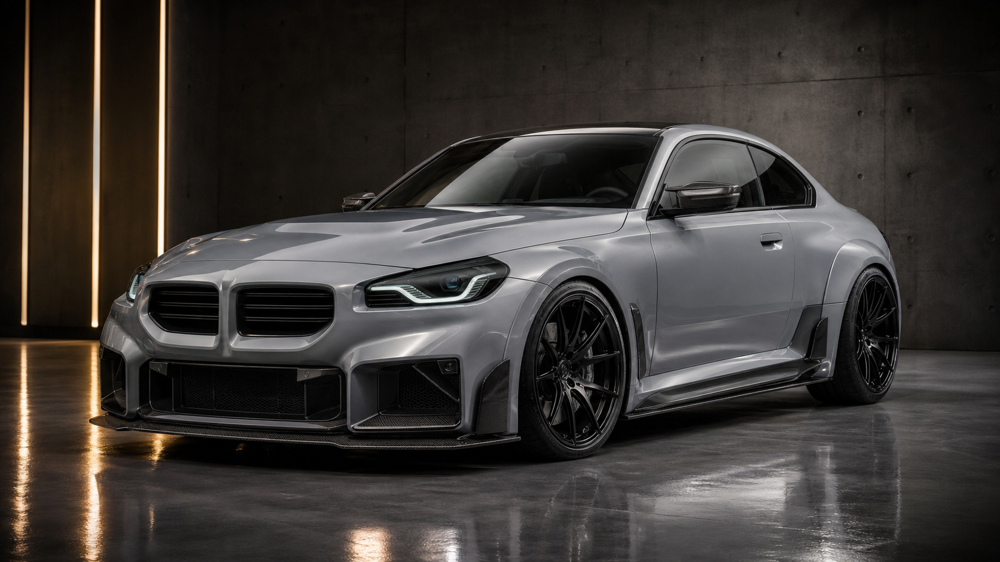
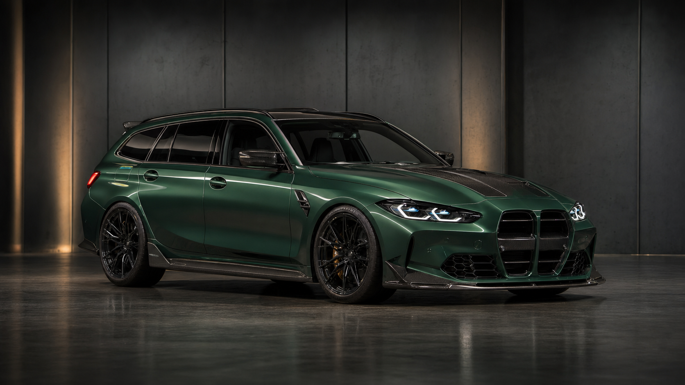
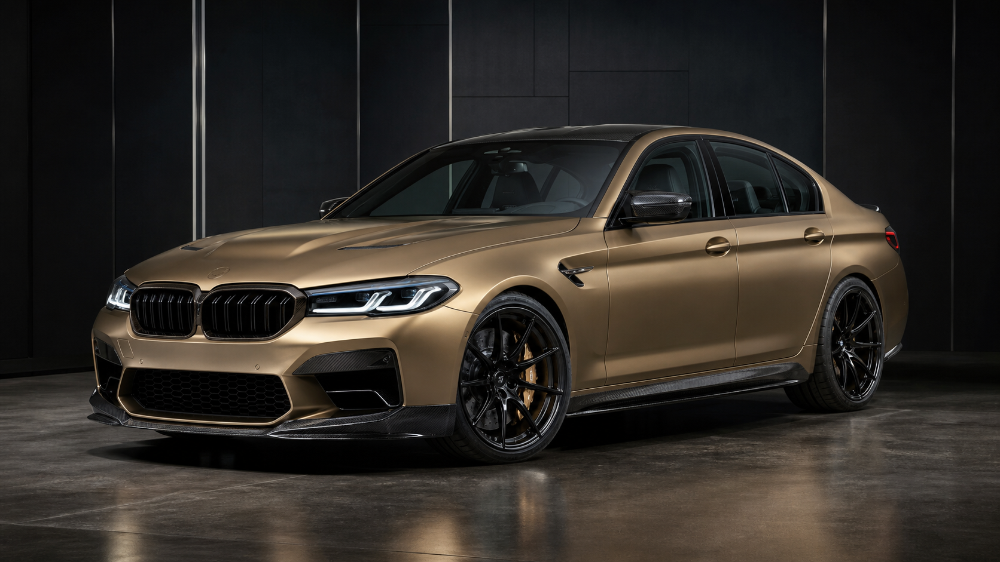
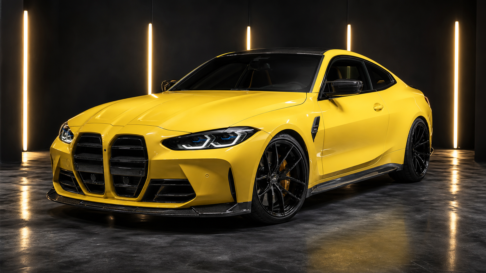
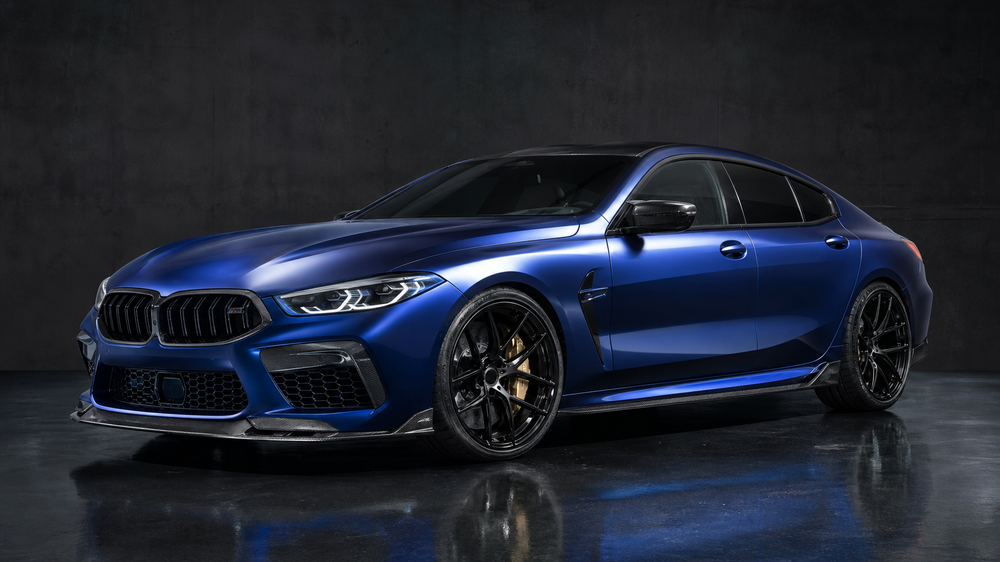
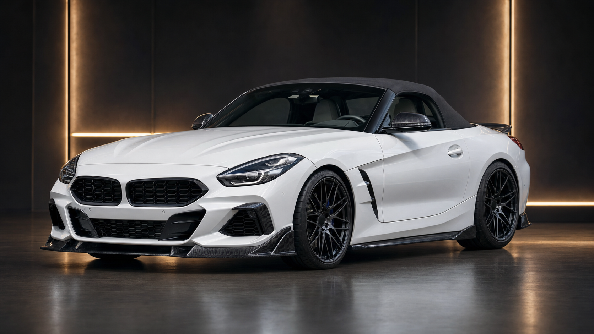
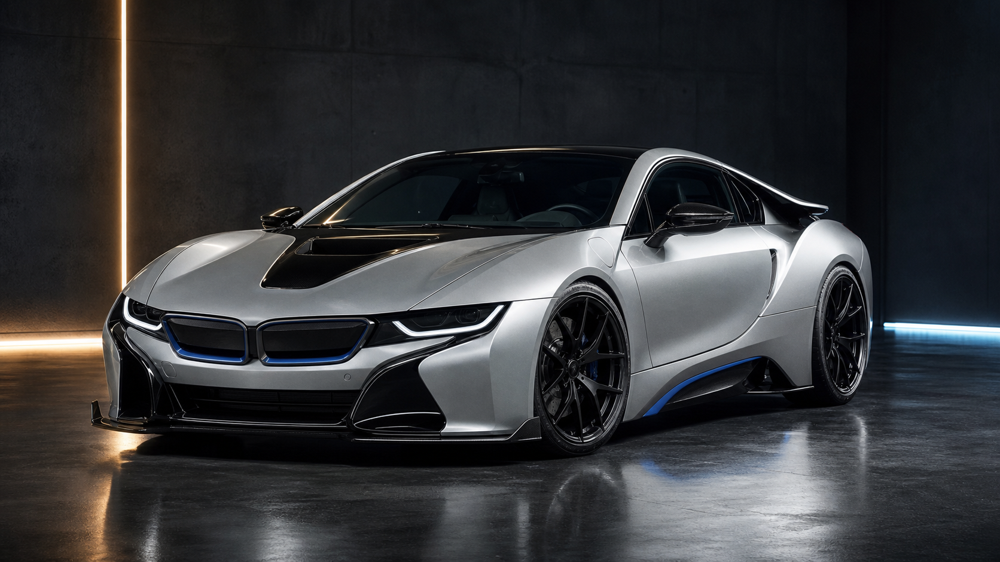
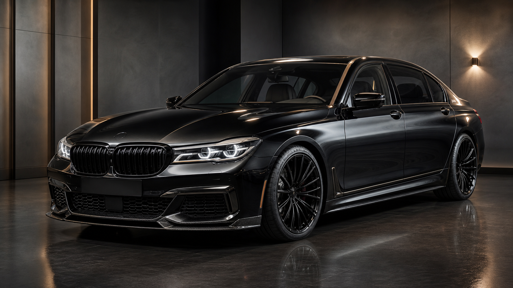

S58 sedan | 2026
2026 BMW M3 Competition xDrive
The flagship sharp-road sedan package with carbon aero, forged wheels, a lowered stance, and a focused cabin finish.
- Year
- 2026
- Engine
- S58 I6
- Setup
- Track road
EDELWERK lineup
Ten BMW model-year commissions from 2017 through 2026, each specified with a distinct EDELWERK role, stance, finish, and cabin direction.

S58 sedan | 2026
The flagship sharp-road sedan package with carbon aero, forged wheels, a lowered stance, and a focused cabin finish.

OEM+ SUV | 2025
A restrained coupe-SUV specification with subtle carbon detail, gloss-black trim, premium cabin materials, and road-first suspension setup.

Compact coupe | 2024
The compact driver car in the catalog, tuned around a short wheelbase, square wheel fitment, carbon accents, and a direct cabin feel.

Performance wagon | 2023
A long-roof performance build with usable luggage space, xDrive traction, subtle aero, and a refined daily-driver interior.

Executive sedan | 2022
A lighter executive sedan commission with bronze details, restrained carbon pieces, sharper wheel fitment, and a serious high-speed brief.

Sharp coupe | 2021
The bold coupe option with a more aggressive color brief, carbon roof treatment, track-ready wheel setup, and clean road legality.

Grand tourer | 2020
A long, low GT build with deep metallic paint, understated carbon, black forged wheels, and a cabin tuned for distance.

Roadster | 2019
The open-top choice with a crisp stance, clean aero, lightweight wheel finish, and a specification built for mountain-road use.

Hybrid coupe | 2018
A future-classic hybrid coupe with aerodynamic polish, technical trim details, black wheel contrast, and a restrained electric-era finish.

Flagship sedan | 2017
The executive flagship commission with a discreet VIP stance, dark trim, polished wheel detail, and a cabin brief centered on quiet performance.
How it works
Choose the BMW model-year that matches the brief, from compact coupe to flagship sedan, touring, roadster, SUV, or hybrid sports car.
Confirm paint, wheel finish, carbon trim, cabin material, tire setup, and final ride height for the selected build.
Confirm Zurich pickup or covered transport, approval paperwork, and inspection media with the EDELWERK team.